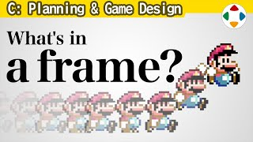
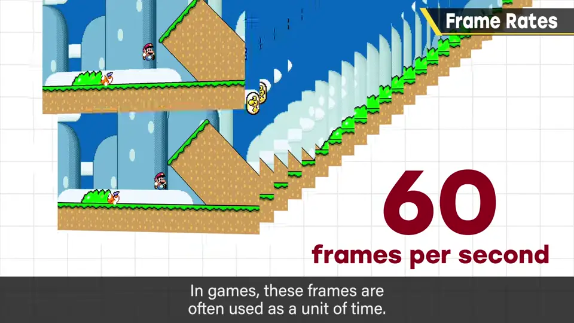
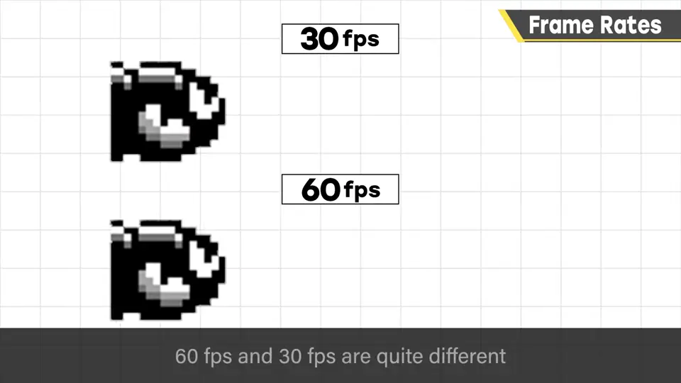
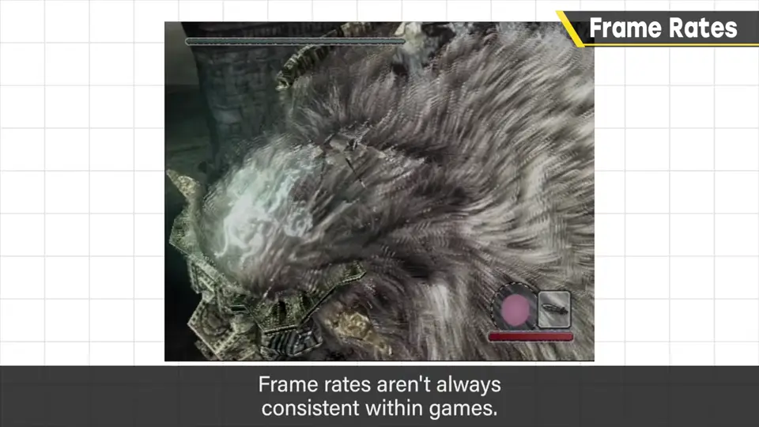
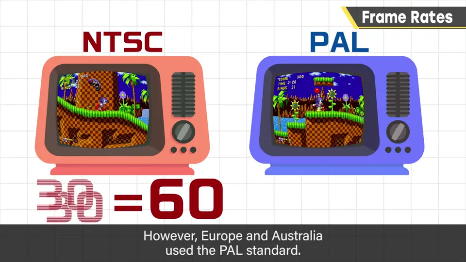
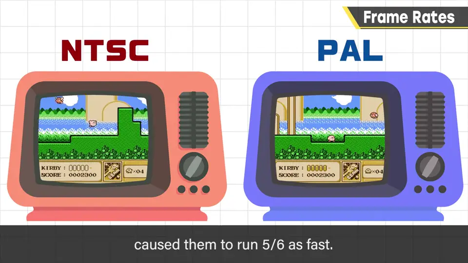

速览
本分类整理构思游戏点子与机制时需要知道的事（企画书格式另讲）。游戏业界的帧，大多指画面刷新的单位，像放映机胶片的一格；一般电视每秒刷新 60 次，即每秒 60 帧，也常被当作游戏的单位时间。距离 = 时间 × 速度，所以帧的推进速度非常重要。60fps 与 30fps 的流畅度差异很大；游戏最好用 60 帧做，但也有以 30 帧为标准的（性能至少要降到一半才行），30 帧也完全能玩。帧数因机种与处理而异；也有处理重时才减少画面帧数的可变帧率，与所谓「处理落帧」不同——游戏速度不变，只降画面。PC 与高端机有 120、甚至 200 以上的帧率，但显示器不支持就没意义。往事：FC～N64 时代电视有 NTSC（日本、北美，靠隔行扫描可做 60 帧）与 PAL（欧洲、澳洲，只有 50 帧）；樱井当年以画面中断次数作为时间单位，所以 PAL 版速度降到 5/6。N64 之后用多边形处理，就容易做到只降画面、处理不变。总结：帧率关乎时间、张数与分辨率，通常为每秒 60 帧，今后会常出现，请记住。
1. 帧是什么 0:04
这个「游戏设计」分类里，樱井想整理构思游戏点子和机制时需要知道的事；企画书怎么写之类的格式会另外讲。
先讲大前提：游戏业界说的帧（frame），大多指画面刷新的单位，就像放映机胶片的一格。一般电视每秒刷新 60 次画面，也就是每秒 60 帧，这也常被当作游戏的单位时间。

距离 = 时间 × 速度。物体移动时，时间单位对速度和距离的计算影响很大，所以帧的推进速度非常重要。
2. 60fps 与 30fps 1:07
每秒 60 帧和 30 帧，看起来和操作的流畅度差别相当大（YouTube 上不一定看得出来）。


- 游戏最好用 60 帧做，但也有以 30 帧为标准的：至少要把性能降到 60 帧的一半才行。
- 30 帧也在完全能玩的范围内，实际上不少作品以 30 帧为标准。
- 帧数不是每款游戏统一，而是因机种和处理而异。
- 可变帧率：只在处理重时减少画面张数——这和所谓「处理落帧」不同：游戏速度不变，只是画面张数下降。
PC 游戏和高端机有每秒 120、甚至超过 200 帧的描画；但机器支持而显示器不支持就没有意义，最好配齐——丝滑最棒。
3. 往事：NTSC 与 PAL 2:25
FC、SFC、N64 时代，显像管电视有 NTSC 和 PAL 两种规格。日本、北美是 NTSC：每秒 30 帧构成，借助隔行扫描，游戏能做到 60 帧。欧洲、澳洲是 PAL：每秒 25 帧，游戏就变成 50 帧。


至少樱井经手的 FC、SFC 时代游戏，是直接把画面中断次数当作时间单位，所以 PAL 版速度会降到 5/6，成品动作稍慢。
但 N64 之后改用多边形处理，就容易做到只放慢画面、处理照常，攻防手感就没有那么违和了。
自测题
1. 游戏业界说的「帧」通常指什么？标准是多少？
画面刷新的单位（像胶片的一格），通常每秒 60 帧，也常被当作游戏的单位时间。 0:30
2. 可变帧率与「处理落帧」有何不同？
可变帧率只在处理重时减少画面张数，游戏速度不变；处理落帧则是游戏本身变慢。 1:43
3. 为什么樱井早期游戏的 PAL 版会变慢？变成多少？
PAL 只有 50 帧，而游戏以画面中断次数为时间单位，所以速度变为 5/6。 3:11